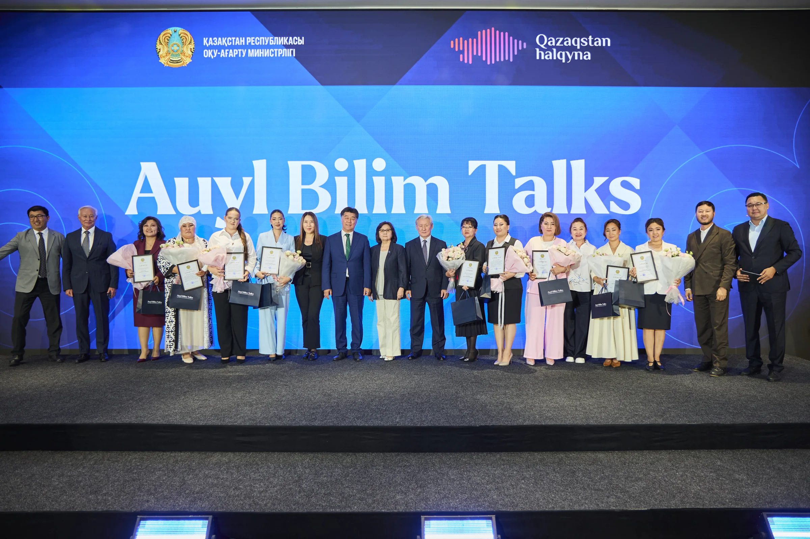

Auyl Bilim Talks
Ауыл педагогтерінің республикалық тәжірибе алмасу форумы Республиканский форум обмена опытом сельских педагогов
Ауыл мұғалімдері бір алаңдаСельские педагоги на одной площадке
2026 жылғы 25 тамызда Астанадағы Maqsut Narikbayev University алаңында өткен Auyl Bilim Talks форумына еліміздің әр өңірінен педагогтер мен мектеп басшылары, білім беру сарапшылары, мемлекеттік және қоғамдық ұйымдардың басшылары, сондай-ақ «Қазақстан халқына» қоры басқармасының өкілдері қатысты. 25 августа 2026 года на форуме Auyl Bilim Talks в Maqsut Narikbayev University в Астане собрались педагоги и руководители школ из разных регионов страны, эксперты в сфере образования, руководители государственных и общественных организаций, а также представители правления фонда «Қазақстан халқына».
Форумда жобаға қатысқан мектептердің педагогтері мен басшылары өз тәжірибелерімен бөлісті. Сегіз баяндамада жаңартылған кабинеттер мен зертханаларды сабақта пайдалану, робототехника және ғылыми зерттеулер арқылы оқушылардың қызығушылығын ояту, балалардың өз күшіне сенімін арттыру, мектептегі тәрбие жұмысын дамыту және ауыл мектебінің болашағы сияқты тақырыптар көтерілді.На форуме педагоги и руководители школ, участвовавших в проекте, поделились своим опытом. В восьми выступлениях обсуждались использование обновлённых кабинетов и лабораторий, развитие интереса школьников через робототехнику и научные исследования, укрепление уверенности детей, воспитательная работа и будущее сельской школы.
Форумда мұғалімдер ауыл мектебіндегі күнделікті жұмыстан алынған нақты мысалдарды ортаға салды. Олар жаңа құралдарды сабақта қолдану жолдарын, кездескен қиындықтарды және оқушылардың зерттеуге деген қызығушылығын арттыру тәжірибесін әріптестерімен бөлісті. Кездесу педагогтерге өз мектебіндегі өзгерістерді таныстырып, басқа өңірлердің тәжірибесімен танысуға мүмкіндік берді.Учителя представили конкретные примеры из повседневной работы сельских школ. Они поделились с коллегами способами применения новых инструментов на уроках, рассказали о возникших трудностях и опыте развития интереса школьников к исследованиям. Встреча дала педагогам возможность рассказать об изменениях в своих школах и познакомиться с опытом других регионов.
Форум аясындағы білім беру көрмесінде ауыл мектептерінде қолданылатын зертханалық жабдықтар, цифрлық құралдар және білім беру шешімдері таныстырылды. Қатысушылар құралдарды көріп, оларды оқу үдерісінде пайдалану жолдарымен танысты. Форум ауыл мектептері арасындағы тәжірибе алмасуға және әр баланың әлеуетін ашуға бағытталды.На образовательной выставке участники познакомились с лабораторным оборудованием, цифровыми инструментами и решениями, которые используются в сельских школах. Форум объединил практический опыт педагогов и идеи о том, как помочь каждому ребёнку раскрыть свой потенциал.